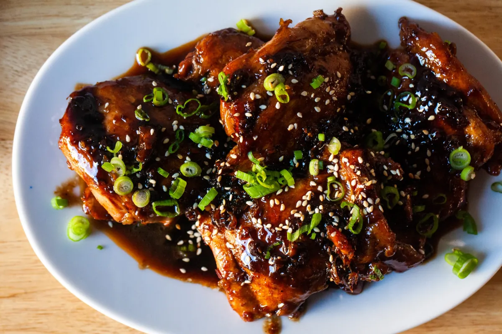

Home Page
Soy Honey Glazed Chicken

This is a recipe for everybody's favourite Soy Honey chicken marinade for boneless chicken thighs and breast.
Ingredients
- Skinless boneless chicken thighs OR breast
- Vegetable oil
- Soy sauce
- Honey
- Rice vinegar
- Sesame oil
- Garlic
Steps
Marinade Sauce
- Place ingredients in a jug and mix well until honey is completely dissolved
- Reserve 1/4 cup for Basting, refrigerate.
- Reserve 2/3 cup for Serving Sauce, refrigerate.Reserve 2/3 cup for Serving Sauce, refrigerate.
- Marinade Chicken: Pour remaining marinade over chicken in a container. Coat chicken thoroughly. Cover, refrigerate 24 to 48 hours (minimum 3 hrs).
Serving Sauce
- Place reserved sauce in a small saucepan. Mix cornflour and water, then add into saucepan.
- Simmer over medium for 5 minutes, stirring regularly, until it thickens to a syrupy consistency. Set aside and keep warm. (If it gets too thick, just add a bit more water)
Cook
- Brush BBQ plate or grills with oil and heat to medium high. Or heat oil in a large skillet over medium high heat.
- THIGHS: Place chicken on BBQ. Cook the first side for 2 minutes, then flip and dab with reserved Basting Sauce. Cook for 2 minutes, flip and baste. Then flip/baste every 1 minute for total cook time of ~ 10 minutes or until a thermometer reads 75°C/165°F.
- BREAST: Cook first side 2 minutes, flip, baste. Cook 2 minutes, then flip and baste every 45 sec or so for total cook time of ~8 minutes (internal temp 66°C / 151°F).
- REST: Transfer to serving plate, cover loosely with foil and rest for 5 minutes.
- SERVE chicken garnished with sesame seeds and green onion, with sauce on the side so people can help themselves.